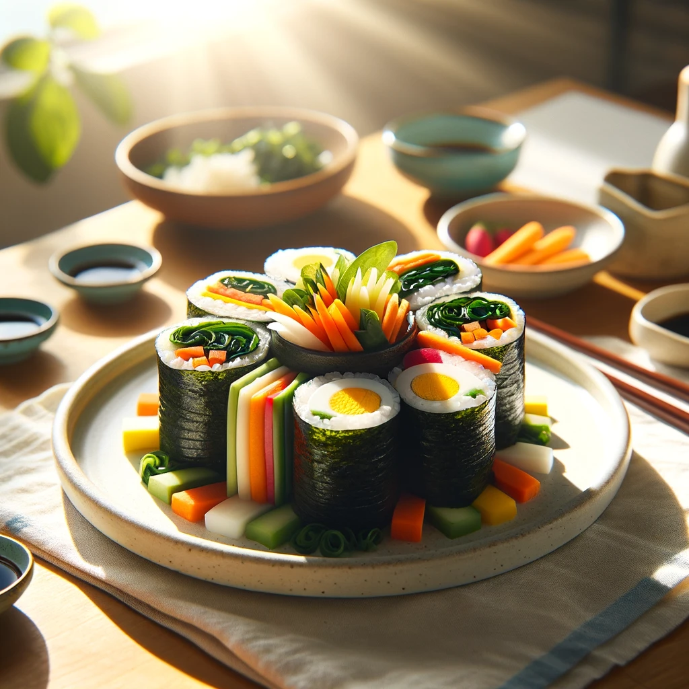

Chantak - Authentic Locally
Enhance the authenticity of your dish by using local ingredients.

Name of Dish
Which country is your kitchen located?
Search
Your Recipe
[Ingredients]
Searching..
[Steps to cook]
This site utilizes generative AI. Always regard the results as a foundation or a source for your work.